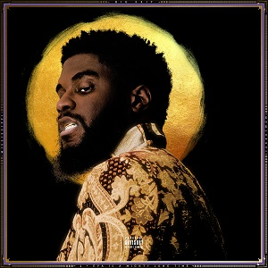
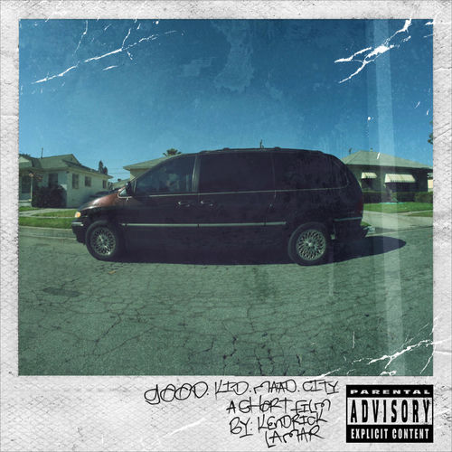
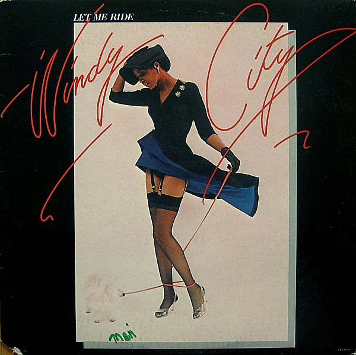

Ced's Playlists
Currently Playing: "Confetti"

Big K.R.I.T. / 4eva Is a Mighty Long Time
- Big K.R.I.T. (2:52)
- Confetti (3:18)
- Big Bank (feat. T.I.) (3:44)
- 1999 (feat. Lloyd) (3:42)
- Ride Wit Me (feat. Bun B & Pimp C) (3:34)
-
Get Up 2 Come Down (feat. CeeLo Green & Sleepy Brown) (4:37)
- Layup (4:20)
- Classic Interlude (0:53)
- Aux Cord (3:15)
- Get Away (4:57)
- Justin Scott (3:39)
- Mixed Messages (3:37)
- Keep the Devil Off (4:31)
- Miss Georgia Fornia (feat. Joi) (5:16)
- Everlasting (3:55)
- Higher Calling (feat. Jill Scott) (4:26)
- Weekend Interlude (1:05)
- Price of Fame (4:17)
- Drinking Sessions (feat. Keyon Harrold) (5:09)
- The Light (feat. Bilal, Robert Glasper Jr., Kenneth Whalum,
- Burniss Earl Travis II) (5:56)
- Bury Me In Gold (4:08)
Up Next

Kendrick Lamar / Good Kid m.A.A.d City
- Sherane a.k.a Master Splinter's Daughter (4:33)
- Bitch, Don't Kill My Vibe (5:10)
- Backseat Freestyle (3:32)
- The Art of Peer Pressure (5:24)
- Money Trees (6:26)
- Poetic Justice (5:00)
- good kid (3:34)
- m.A.A.d city (5:50)
- Swimming Pools (Drank) (5:13)
- Sing About Me, I'm Dying of Thirst (12:03)
- Real (7:23)
- Compton (4:08)
- The Recipe (feat. Dr. Dre) (5:52)
- Black Boy Fly (4:38)
- Now or Never (feat. Mary J. Blige) (4:17)
- Collect Calls (feat. Kent Jamz) (3:55)
- Swimming Pools (Drank) [Extended Version] (5:13)
Scheduled

Windy City / Let Me Ride
- Introduction: Windy City Theme (1:32)
- (So You Think) Somethin's Missin' (2:15)
- Win or Lose (3:06)
- Gimme Some (3:32)
- Feeling Like I Don't Belong (3:22)
- Let Me Ride (3:55)
- Learnin' (3:18)
- Good Guys Don't Always Win (3:28)
- Fool or Your Man (3:21)
- I've Got Mine (3:30)
- If by Chance (5:24)